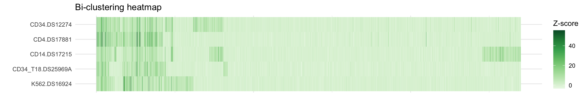
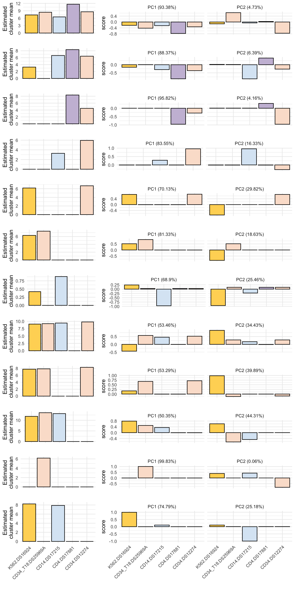

Last updated: 2022-08-13
Checks: 6 1
Knit directory: workflowr/
This reproducible R Markdown analysis was created with workflowr (version 1.7.0). The Checks tab describes the reproducibility checks that were applied when the results were created. The Past versions tab lists the development history.
The R Markdown file has unstaged changes. To know which version of
the R Markdown file created these results, you’ll want to first commit
it to the Git repo. If you’re still working on the analysis, you can
ignore this warning. When you’re finished, you can run
wflow_publish to commit the R Markdown file and build the
HTML.
Great job! The global environment was empty. Objects defined in the global environment can affect the analysis in your R Markdown file in unknown ways. For reproduciblity it’s best to always run the code in an empty environment.
The command set.seed(20190717) was run prior to running
the code in the R Markdown file. Setting a seed ensures that any results
that rely on randomness, e.g. subsampling or permutations, are
reproducible.
Great job! Recording the operating system, R version, and package versions is critical for reproducibility.
Nice! There were no cached chunks for this analysis, so you can be confident that you successfully produced the results during this run.
Great job! Using relative paths to the files within your workflowr project makes it easier to run your code on other machines.
Great! You are using Git for version control. Tracking code development and connecting the code version to the results is critical for reproducibility.
The results in this page were generated with repository version f1a7b55. See the Past versions tab to see a history of the changes made to the R Markdown and HTML files.
Note that you need to be careful to ensure that all relevant files for
the analysis have been committed to Git prior to generating the results
(you can use wflow_publish or
wflow_git_commit). workflowr only checks the R Markdown
file, but you know if there are other scripts or data files that it
depends on. Below is the status of the Git repository when the results
were generated:
Ignored files:
Ignored: .DS_Store
Ignored: .Rproj.user/
Ignored: analysis/running_mcmc_cache/
Ignored: data/DHS_Index_and_Vocabulary_hg38_WM20190703.txt
Ignored: data/DNase_chr21/
Ignored: data/DNase_chr22/
Ignored: data/dat_FDR01_hg38.RData
Ignored: output/DNase/
Untracked files:
Untracked: data/DHS_Index_and_Vocabulary_hg38_WM20190703.txt.gz
Untracked: data/DHS_Index_and_Vocabulary_metadata.xlsx
Unstaged changes:
Modified: analysis/.DS_Store
Modified: analysis/DNase_example.Rmd
Modified: analysis/pairwise_fitting_cache/html/__packages
Deleted: analysis/pairwise_fitting_cache/html/unnamed-chunk-3_49e4d860f91e483a671b4b64e8c81934.RData
Deleted: analysis/pairwise_fitting_cache/html/unnamed-chunk-3_49e4d860f91e483a671b4b64e8c81934.rdb
Deleted: analysis/pairwise_fitting_cache/html/unnamed-chunk-3_49e4d860f91e483a671b4b64e8c81934.rdx
Deleted: analysis/pairwise_fitting_cache/html/unnamed-chunk-6_4e13b65e2f248675b580ad2af3613b06.RData
Deleted: analysis/pairwise_fitting_cache/html/unnamed-chunk-6_4e13b65e2f248675b580ad2af3613b06.rdb
Deleted: analysis/pairwise_fitting_cache/html/unnamed-chunk-6_4e13b65e2f248675b580ad2af3613b06.rdx
Modified: analysis/preprocessing_cache/html/__packages
Deleted: analysis/preprocessing_cache/html/unnamed-chunk-11_d0dcbf60389f2e00d36edbf7c0da270d.RData
Deleted: analysis/preprocessing_cache/html/unnamed-chunk-11_d0dcbf60389f2e00d36edbf7c0da270d.rdb
Deleted: analysis/preprocessing_cache/html/unnamed-chunk-11_d0dcbf60389f2e00d36edbf7c0da270d.rdx
Modified: data/.DS_Store
Modified: data/tpm_zebrafish.tsv.gz
Modified: output/.DS_Store
Note that any generated files, e.g. HTML, png, CSS, etc., are not included in this status report because it is ok for generated content to have uncommitted changes.
These are the previous versions of the repository in which changes were
made to the R Markdown (analysis/DNase_example.Rmd) and
HTML (docs/DNase_example.html) files. If you’ve configured
a remote Git repository (see ?wflow_git_remote), click on
the hyperlinks in the table below to view the files as they were in that
past version.
| File | Version | Author | Date | Message |
|---|---|---|---|---|
| Rmd | f1a7b55 | Hillary Koch | 2022-08-13 | add DNase analysis |
| html | f1a7b55 | Hillary Koch | 2022-08-13 | add DNase analysis |
This vignette walks through a lightweight version of the DNase-seq analysis discussed in the CLIMB paper. The purpose of the original analysis was to investigate patterns of chromatin accessibility across 38 hematopoietic cell populations, and how these relate to differential transcription factor binding across cell populations. While the complete analysis considered DNase-seq collected on all autosomes across these cell populations, and checked results against transcription factor footprinting signals and motif enrichment at DNase hypersensitive sites, this lightweight version will only consider the analysis of DNaseq-seq in 5 cell populations on 2 chromosomes. A figure akin to Fig. 5a from the CLIMB article is generated.
# load libraries
library(readxl)
suppressPackageStartupMessages(library(dplyr))
library(purrr)
library(readr)
library(stringr)
suppressPackageStartupMessages(library(magrittr))
suppressPackageStartupMessages(library(R.utils))
suppressWarnings(library(CLIMB))
suppressPackageStartupMessages(library(tidyr))
library(ggplot2)
library(cowplot)First we download and process the data, made publicly available by Meuleman et al (2020).
if(!file.exists("data/dat_FDR01_hg38.RData")) {
download.file(url = "https://zenodo.org/record/3838751/files/dat_FDR01_hg38.RData?download=1",
destfile = "data/dat_FDR01_hg38.RData",
method = "curl")
}
if (!file.exists("data/DHS_Index_and_Vocabulary_hg38_WM20190703.txt.gz")) {
download.file(url = "https://zenodo.org/record/3838751/files/DHS_Index_and_Vocabulary_hg38_WM20190703.txt.gz?download=1",
destfile = "data/DHS_Index_and_Vocabulary_hg38_WM20190703.txt.gz",
method = "curl")
R.utils::gunzip("data/DHS_Index_and_Vocabulary_hg38_WM20190703.txt.gz")
}
if (!file.exists("data/DHS_Index_and_Vocabulary_metadata.xlsx")) {
download.file(url = "https://zenodo.org/record/3838751/files/DHS_Index_and_Vocabulary_metadata.xlsx?download=1",
destfile = "data/DHS_Index_and_Vocabulary_metadata.xlsx",
method = "curl")
}We will only analyze 5 cell populations from this dataset. The selected cell populations are those whose transcription factor footprinting signals are visualized in Fig. 5b of the CLIMB paper.
# Extract sample metadata for samples to be used
sample_data <-
read_xlsx("data/biosamples_used.xlsx",
range = c("A1:M39"))
# Cell populations to be analyzeds
cell_pops_to_keep <-
c(
"CD4.DS17881",
"CD34.DS12274",
"CD34_T18.DS25969A",
"CD14.DS17215",
"K562.DS16924"
)
# Join with the data from the source paper's supplement
all_sample_metadata <-
read_xlsx("data/DHS_Index_and_Vocabulary_metadata.xlsx") %>%
right_join(
sample_data,
by = c("DCC Library ID" = "DCC_library_id", "DCC Biosample ID" = "DCC_biosample_id")
)
# Get BED info
bed <- readr::read_tsv("data/DHS_Index_and_Vocabulary_hg38_WM20190703.txt")Rows: 3591898 Columns: 10
── Column specification ────────────────────────────────────────────────────────
Delimiter: "\t"
chr (3): seqname, identifier, component
dbl (7): start, end, mean_signal, numsamples, summit, core_start, core_end
ℹ Use `spec()` to retrieve the full column specification for this data.
ℹ Specify the column types or set `show_col_types = FALSE` to quiet this message.# Load in and subset the normalized data (this object is called `dat`)
load("data/dat_FDR01_hg38.RData")
# Subset to selected hematopoietic columns, then filter out rows with 0 or 1 DHSs
my_dat <- dat %>%
as_tibble() %>%
dplyr::select(all_sample_metadata$`library order`) %>%
bind_cols(dplyr::select(bed, seqname, start, end)) %>%
relocate(seqname, start, end, .before = 1) %>%
# subset to 5 samples as plotted in the CLIMB article
dplyr::select(seqname, start, end, matches(cell_pops_to_keep)) %>%
dplyr::filter(rowSums(across(all_of(4:last_col()), ~ .x != 0)) > 1) %>%
rename("chr" = "seqname") %>%
mutate(across(4:last_col(), ~ replace(.x, .x == 0, rnorm(sum(.x==0)))))
# clean large object from environment
rm(dat)
# this is to prevent some numerical issues due to extreme outliers
max_quant <- dplyr::select(my_dat, 4:last_col()) %>%
map_dbl(~ quantile(.x, .999)) %>%
max()
my_dat <- my_dat %>%
mutate(across(4:last_col(), ~ replace(.x, .x >= max_quant, max_quant))) %>%
# select only chromosomes 21 and 22
filter(chr %in% c("chr21", "chr22")) %>%
group_split(chr)
for(i in seq_along(my_dat)) {
if(!dir.exists(paste0("data/DNase_", my_dat[[i]]$chr[1]))) {
dir.create(paste0("data/DNase_", my_dat[[i]]$chr[1]))
}
saveRDS(object = my_dat[[i]], file = paste0("data/DNase_", my_dat[[i]]$chr[1], "/dat.rds"))
}As in the other vignettes, we now implement CLIMB in 4 steps. Run locally, this should complete in ~30 minutes. The bottleneck is the MCMC on 2 chromosomes serially.
set.seed(217)
chr <- 21:22
z <- map(chr, ~ readRDS(paste0("data/DNase_chr", .x, "/dat.rds")) %>%
mutate(chr = NULL, start = NULL, end = NULL)) %>%
set_names(paste0("chr", chr))
fits <- map(z, ~ CLIMB::get_pairwise_fits(z = .x, parallel = TRUE, ncores = 4))
if(!dir.exists("output/DNase")) {
dir.create("output/DNase")
}
if(!dir.exists("output/DNase/pwfits")) {
dir.create("output/DNase/pwfits")
}
walk(chr, ~ {
if (!dir.exists(paste0("output/DNase/pwfits/chr", .x))) {
dir.create(paste0("output/DNase/pwfits/chr", .x))
}
})
iwalk(fits, ~ saveRDS(.x, paste0("output/DNase/pwfits/", .y, "/pwfits.rds")))# This finds the dimension of the data directly from the pairwise fits
D <- as.numeric(strsplit(tail(names(fits[[1]]),1), "_")[[1]][2])
# calculates the sample sizes from the pairwise fits
n <- map_dbl(fits, ~ length(.x[[1]]$cluster))
if(!dir.exists("output/DNase/reduced_classes")) {
dir.create("output/DNase/reduced_classes")
}
walk(chr, ~ {
if (!dir.exists(paste0("output/DNase/reduced_classes/chr", .x))) {
dir.create(paste0("output/DNase/reduced_classes/chr", .x))
}
})
# Get the list of candidate latent classes
reduced_classes <-
imap(fits, ~ get_reduced_classes(
.x,
D,
paste0("output/DNase/reduced_classes/", .y, "/lgf.txt"),
split_in_two = FALSE
))Writing LGF file...done!
Finding latent classes...done!
Writing LGF file...done!
Finding latent classes...done!# write the output to a text file
iwalk(reduced_classes, ~ {
readr::write_tsv(
data.frame(.x),
file = paste0("output/DNase/reduced_classes/", .y, "/red_class.txt"),
col_names = FALSE
)
})if(!dir.exists("output/DNase/mcmc")) {
dir.create("output/DNase/mcmc")
}
walk(chr, ~ {
if (!dir.exists(paste0("output/DNase/mcmc/chr", .x))) {
dir.create(paste0("output/DNase/mcmc/chr", .x))
}
})
# Compute the prior weights
prior_weights <-
pmap(list(fits, reduced_classes, names(fits)), function(.x, .y, .z)
get_prior_weights(
.y,
.x,
parallel = FALSE,
delta = 0:10
)) %>%
# just keep all classes since the analysis is small
map(~ tail(.x, 1)[[1]])
iwalk(prior_weights, ~ saveRDS(.x, paste0("output/DNase/mcmc/", .y, "/prior_weights.rds")))
# obtain the hyperparameters
hyp <-
pmap(list(my_dat, fits, reduced_classes, prior_weights), function(.w, .x, .y, .z)
get_hyperparameters(
as.data.frame(dplyr::select(.w, 4:last_col())),
.x,
as.data.frame(.y),
as.vector(.z)
)) %>%
set_names(names(fits))
iwalk(hyp, ~ saveRDS(.x, file = paste0("output/DNase/mcmc/", .y, "/hyperparameters.rds")))results <-
pmap(list(my_dat, hyp, reduced_classes), function(.x, .y, .z) run_mcmc(
dplyr::select(.x, 4:last_col()),
hyp = .y,
nstep = 2000,
retained_classes = .z
)) %>%
set_names(names(fits))Julia version 1.8.0-rc3 at location /Applications/Julia-1.8.app/Contents/Resources/julia/bin will be used.Loading setup script for JuliaCall...Finish loading setup script for JuliaCall.chains <- map(results, extract_chains)
iwalk(chains, ~ saveRDS(.x, file = paste0("output/DNase/mcmc/", .y, "/chain.rds")))Since each chromosome was analyzed separately, we merge the 2 sets of results. We opt to maintain 12 parent groups after merging clusters from both chromosomes, in order to be consistent with the analysis in the CLIMB paper.
burnin <- 1:500
merged <-
suppressMessages(merge_classes(
n_groups = 12,
# number of classes used in the CLIMB article's analysis
chain = chains,
burnin = burnin,
multichain = TRUE
))col_distmat <- compute_distances_between_conditions(chains, burnin, multichain = TRUE)
row_distmat <- suppressMessages(compute_distances_between_clusters(chains, burnin, multichain = TRUE))
colnames(col_distmat) <- names(my_dat[[1]])[-(1:3)]
hc_row <- hclust(as.dist(row_distmat), method = "complete")
hc_col <- hclust(as.dist(col_distmat), method = "complete")
# Get a row reordering for plotting
row_reordering <-
get_row_reordering(
row_clustering = hc_row,
chain = chains,
burnin = burnin,
dat = purrr::map(my_dat, ~ dplyr::select(.x, 4:last_col())),
multichain = TRUE
)
molten <- bind_rows(my_dat) %>%
dplyr::mutate(row = row_reordering) %>%
dplyr::select(4:last_col()) %>%
tidyr::pivot_longer(!last_col(), names_to = "cell") %>%
# Relevel factors, for column sorting on the plot
mutate(cell = forcats::fct_relevel(cell, ~ hc_col$labels[hc_col$order]))
p1 <- ggplot(data = molten,
aes(x = cell,
y = row,
fill = value)) +
geom_raster() +
theme_minimal() +
theme(
axis.text.x = element_blank(),
) +
labs(fill = "Z-score", x = "", y = "") +
ggtitle("Bi-clustering heatmap") +
scale_fill_distiller(palette = "Greens", direction = 1) +
coord_flip()
print(p1)
| Version | Author | Date |
|---|---|---|
| f1a7b55 | Hillary Koch | 2022-08-13 |
#-------------------------------------------------------------------------------
# Read in colormap for plotting, to match cell type by function
#-------------------------------------------------------------------------------
pal <- read_delim(file = "data/color_mapper.txt", col_names = FALSE, delim = " ") %>%
set_names(c("cell_pop", "hex"))Rows: 38 Columns: 2
── Column specification ────────────────────────────────────────────────────────
Delimiter: " "
chr (2): X1, X2
ℹ Use `spec()` to retrieve the full column specification for this data.
ℹ Specify the column types or set `show_col_types = FALSE` to quiet this message.# mean trends ---------------------------------------------------
# each row of merged_mu should correspond to a different factor
# each column is a cell population
mu <- merged$merged_mu %>%
set_colnames(cell_pops_to_keep) %>%
as_tibble() %>%
mutate(group = 1:n(), .before = 1) %>%
pivot_longer(cols = 2:last_col(),
names_to = "cell_pop",
values_to = "mu_est")
# covariance trends ---------------------------------------------------
sigmas <- merged$merged_sigma %>%
apply(MARGIN = 3, function(X) {
X %>%
set_colnames(cell_pops_to_keep) %>%
as_tibble(X, .name_repair = "minimal")
})
sigma_df <- sigmas %>%
imap_dfr(
~ mutate(
.x,
group = .y,
cell_pop1 = cell_pops_to_keep,
.before = 1
) %>%
pivot_longer(
cols = 3:last_col(),
names_to = "cell_pop2",
values_to = "covariance"
)
)
#-------------------------------------------------------------------------------
# Use row and column clustering for row reordering
#-------------------------------------------------------------------------------
cl <- list(row_clustering = hc_row, col_clustering = hc_col)
pcs <- map(sigmas, ~ prcomp(.x, center = TRUE))
out_plots <- list()
clusts_to_plot <- seq_along(pcs)
for(ccc in clusts_to_plot) {
pc_df <- as_tibble(pcs[[ccc]]$rotation) %>%
mutate(cell_pop = cell_pops_to_keep, .before = 1) %>%
pivot_longer(cols = !cell_pop, names_to = "PC", values_to = "score") %>%
mutate(PC = factor(PC, levels = paste0("PC", seq_along(cell_pops_to_keep)))) %>%
group_split(PC) %>%
map2_dfr((pcs[[ccc]]$sdev ^2) / sum(pcs[[ccc]]$sdev^2), ~ mutate(.x, percent_var = round(.y * 100, digits = 2))) %>%
left_join(
filter(mu, group == ccc) %>%
mutate(group = NULL), by = "cell_pop") %>%
left_join(pal, by = "cell_pop") %>%
mutate(
cell_pop = factor(cell_pop, levels = cl$col_clustering$labels[cl$col_clustering$order])
) %>%
arrange(cell_pop) %>%
mutate(hex = factor(hex, levels = unique(.$hex)))
mu_plot <- ggplot(filter(pc_df, PC %in% "PC1"), aes(x = cell_pop, y = mu_est)) +
geom_bar(aes(fill = hex), stat = "identity", color = "black", show.legend = FALSE) +
scale_fill_manual(values = levels(pc_df$hex)) +
labs(x = "", y = "Estimated\ncluster mean") +
theme_minimal()
if(ccc == 12) {
mu_plot <- mu_plot + theme(axis.text.x = element_text(angle = 45, hjust = 1, vjust = 1),
legend.position = "none")
} else {
mu_plot <- mu_plot + theme(axis.text.x = element_blank(), legend.position = "none")
}
pc_df2 <- filter(pc_df, PC %in% paste0("PC", 1:2)) %>%
unite(col = PC_var, PC, percent_var, sep = " (") %>%
mutate(PC_var = paste0(PC_var, "%)"))
pc_plot <- ggplot(pc_df2, aes(x = cell_pop, y = score)) +
geom_bar(aes(fill = hex), stat = "identity", color = "black", show.legend = FALSE) +
scale_fill_manual(values = levels(pc_df$hex)) +
labs(x = "") +
facet_wrap(~ PC_var, nrow = 1, ncol = 2) +
theme_minimal()
if(ccc == 12) {
pc_plot <- pc_plot + theme(axis.text.x = element_text(angle = 45, hjust = 1, vjust = 1),
legend.position = "none")
} else {
pc_plot <- pc_plot + theme(axis.text.x = element_blank(), legend.position = "none")
}
out_plots[[ccc]] <- cowplot::plot_grid(mu_plot, pc_plot, nrow = 1, ncol = 2, rel_widths = c(1,2))
}
cowplot::plot_grid(plotlist = out_plots, nrow = length(out_plots), ncol = 1, rel_heights = c(rep(1,11), 2))
| Version | Author | Date |
|---|---|---|
| f1a7b55 | Hillary Koch | 2022-08-13 |
print(sessionInfo())R version 4.2.1 (2022-06-23)
Platform: aarch64-apple-darwin20 (64-bit)
Running under: macOS Monterey 12.5
Matrix products: default
BLAS: /Library/Frameworks/R.framework/Versions/4.2-arm64/Resources/lib/libRblas.0.dylib
LAPACK: /Library/Frameworks/R.framework/Versions/4.2-arm64/Resources/lib/libRlapack.dylib
locale:
[1] en_US.UTF-8/en_US.UTF-8/en_US.UTF-8/C/en_US.UTF-8/en_US.UTF-8
attached base packages:
[1] stats graphics grDevices utils datasets methods base
other attached packages:
[1] cowplot_1.1.1 ggplot2_3.3.6 tidyr_1.2.0 CLIMB_1.0.0
[5] R.utils_2.12.0 R.oo_1.25.0 R.methodsS3_1.8.2 magrittr_2.0.3
[9] stringr_1.4.0 readr_2.1.2 purrr_0.3.4 dplyr_1.0.9
[13] readxl_1.4.0
loaded via a namespace (and not attached):
[1] sass_0.4.2 bit64_4.0.5 LaplacesDemon_16.1.6
[4] vroom_1.5.7 jsonlite_1.8.0 foreach_1.5.2
[7] bslib_0.4.0 brio_1.1.3 assertthat_0.2.1
[10] highr_0.9 cellranger_1.1.0 yaml_2.3.5
[13] pillar_1.8.0 glue_1.6.2 digest_0.6.29
[16] RColorBrewer_1.1-3 promises_1.2.0.1 colorspace_2.0-3
[19] htmltools_0.5.3 httpuv_1.6.5 plyr_1.8.7
[22] JuliaCall_0.17.4 pkgconfig_2.0.3 mvtnorm_1.1-3
[25] scales_1.2.0 whisker_0.4 later_1.3.0
[28] tzdb_0.3.0 git2r_0.30.1 tibble_3.1.8
[31] generics_0.1.3 farver_2.1.1 ellipsis_0.3.2
[34] cachem_1.0.6 withr_2.5.0 cli_3.3.0
[37] crayon_1.5.1 evaluate_0.15 fs_1.5.2
[40] fansi_1.0.3 doParallel_1.0.17 forcats_0.5.1
[43] tools_4.2.1 hms_1.1.1 lifecycle_1.0.1
[46] munsell_0.5.0 compiler_4.2.1 jquerylib_0.1.4
[49] rlang_1.0.4 grid_4.2.1 iterators_1.0.14
[52] rstudioapi_0.13 labeling_0.4.2 rmarkdown_2.14
[55] testthat_3.1.4 gtable_0.3.0 codetools_0.2-18
[58] abind_1.4-5 DBI_1.1.3 rematch_1.0.1
[61] R6_2.5.1 knitr_1.39 fastmap_1.1.0
[64] bit_4.0.4 utf8_1.2.2 workflowr_1.7.0
[67] rprojroot_2.0.3 stringi_1.7.8 parallel_4.2.1
[70] Rcpp_1.0.9 vctrs_0.4.1 tidyselect_1.1.2
[73] xfun_0.31